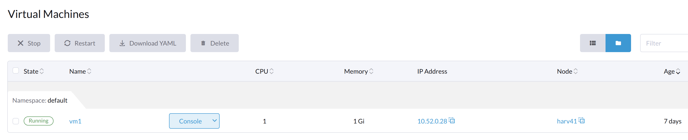

Problemas de máquinas virtuales
Las siguientes secciones contienen información útil para solucionar problemas relacionados con la gestión de SUSE Virtualization máquinas virtuales.
El botón de inicio de la máquina virtual no es visible
Descripción del problema
En raras ocasiones, el botón Iniciar no está disponible en la interfaz de usuario SUSE Virtualization para máquinas virtuales que están Apagadas. Sin ese botón, los usuarios no pueden iniciar las máquinas virtuales.

Operaciones generales de la máquina virtual
En la interfaz de usuario SUSE Virtualization, el botón Terminar es visible después de que se crea y se inicia una máquina virtual.

El botón Iniciar es visible después de que la máquina virtual se apaga.

Cuando la máquina virtual se apaga desde dentro de la máquina virtual, ambos botones Iniciar y Reiniciar son visibles.

Objetos generales relacionados con la máquina virtual
Una máquina virtual en ejecución
Los objetos vm, vmi y pod, que están todos relacionados con la máquina virtual, existen. El estado de los tres objetos es Running.
# kubectl get vm NAME AGE STATUS READY vm8 7m25s Running True # kubectl get vmi NAME AGE PHASE IP NODENAME READY vm8 78s Running 10.52.0.199 harv41 True # kubectl get pod NAME READY STATUS RESTARTS AGE virt-launcher-vm8-tl46h 1/1 Running 0 80s
Una máquina virtual apagada usando la interfaz de usuario SUSE Virtualization
Solo existe el objeto vm y su estado es Stopped. Ambos vmi y pod desaparecen.
# kubectl get vm NAME AGE STATUS READY vm8 123m Stopped False # kubectl get vmi No resources found in default namespace. # kubectl get pod No resources found in default namespace. #
Una máquina virtual apagada usando el comando de apagado de la máquina virtual
Los objetos vm, vmi y pod, que están todos relacionados con la máquina virtual, existen. El estado de vm es Stopped, mientras que el estado de pod es Completed.
# kubectl get vm NAME AGE STATUS READY vm8 134m Stopped False # kubectl get vmi NAME AGE PHASE IP NODENAME READY vm8 2m49s Succeeded 10.52.0.199 harv41 False # kubectl get pod NAME READY STATUS RESTARTS AGE virt-launcher-vm8-tl46h 0/1 Completed 0 2m54s
Análisis del problema
Cuando ocurre el problema, los objetos vm, vmi y pod existen. El estado de los objetos es similar al de Una VM apagada utilizando el comando de apagado de la VM.
Ejemplo:
La VM ocffm031v000 no está lista (status: "False") porque el pod virt-launcher está terminando (reason: "PodTerminating").
- apiVersion: kubevirt.io/v1
kind: VirtualMachine
...
status:
conditions:
- lastProbeTime: "2023-07-20T08:37:37Z"
lastTransitionTime: "2023-07-20T08:37:37Z"
message: virt-launcher pod is terminating
reason: PodTerminating
status: "False"
type: Ready
De manera similar, la VMI (instancia de máquina virtual) ocffm031v000 no está lista (status: "False") porque el pod virt-launcher está terminando (reason: "PodTerminating").
- apiVersion: kubevirt.io/v1
kind: VirtualMachineInstance
...
name: ocffm031v000
...
status:
activePods:
ec36a1eb-84a5-4421-b57b-2c14c1975018: aibfredg02
conditions:
- lastProbeTime: "2023-07-20T08:37:37Z"
lastTransitionTime: "2023-07-20T08:37:37Z"
message: virt-launcher pod is terminating
reason: PodTerminating
status: "False"
type: Ready
Por otro lado, el pod virt-launcher-ocffm031v000-rrkss no está listo (status: "False") porque el pod ha finalizado su ejecución (reason: "PodCompleted").
El contenedor subyacente 0d7a0f64f91438cb78f026853e6bebf502df1bdeb64878d351fa5756edc98deb está terminado, y el exitCode es 0.
- apiVersion: v1
kind: Pod
...
name: virt-launcher-ocffm031v000-rrkss
...
ownerReferences:
- apiVersion: kubevirt.io/v1
...
kind: VirtualMachineInstance
name: ocffm031v000
uid: 8d2cf524-7e73-4713-86f7-89e7399f25db
uid: ec36a1eb-84a5-4421-b57b-2c14c1975018
...
status:
conditions:
- lastProbeTime: "2023-07-18T13:48:56Z"
lastTransitionTime: "2023-07-18T13:48:56Z"
message: the virtual machine is not paused
reason: NotPaused
status: "True"
type: kubevirt.io/virtual-machine-unpaused
- lastProbeTime: "null"
lastTransitionTime: "2023-07-18T13:48:55Z"
reason: PodCompleted
status: "True"
type: Initialized
- lastProbeTime: "null"
lastTransitionTime: "2023-07-20T08:38:56Z"
reason: PodCompleted
status: "False"
type: Ready
- lastProbeTime: "null"
lastTransitionTime: "2023-07-20T08:38:56Z"
reason: PodCompleted
status: "False"
type: ContainersReady
...
containerStatuses:
- containerID: containerd://0d7a0f64f91438cb78f026853e6bebf502df1bdeb64878d351fa5756edc98deb
image: registry.suse.com/suse/sles/15.4/virt-launcher:0.54.0-150400.3.3.2
imageID: sha256:43bb08efdabb90913534b70ec7868a2126fc128887fb5c3c1b505ee6644453a2
lastState: {}
name: compute
ready: false
restartCount: 0
started: false
state:
terminated:
containerID: containerd://0d7a0f64f91438cb78f026853e6bebf502df1bdeb64878d351fa5756edc98deb
exitCode: 0
finishedAt: "2023-07-20T08:38:55Z"
reason: Completed
startedAt: "2023-07-18T13:50:17Z"
Una diferencia crítica es que las acciones Stop y Start aparecen en la propiedad stateChangeRequests de vm.
status:
conditions:
...
printableStatus: Stopped
stateChangeRequests:
- action: Stop
uid: 8d2cf524-7e73-4713-86f7-89e7399f25db
- action: Start
Motivo principal
La causa raíz de este problema está bajo investigación.
Es notable que el código fuente verifica el estado de vm y asume que el objeto está iniciándose. No se añaden operaciones de Start y Restart al objeto.
func (vf *vmformatter) canStart(vm *kubevirtv1.VirtualMachine, vmi *kubevirtv1.VirtualMachineInstance) bool {
if vf.isVMStarting(vm) {
return false
}
..
}
func (vf *vmformatter) canRestart(vm *kubevirtv1.VirtualMachine, vmi *kubevirtv1.VirtualMachineInstance) bool {
if vf.isVMStarting(vm) {
return false
}
...
}
func (vf *vmformatter) isVMStarting(vm *kubevirtv1.VirtualMachine) bool {
for _, req := range vm.Status.StateChangeRequests {
if req.Action == kubevirtv1.StartRequest {
return true
}
}
return false
}
Solución
Para abordar el problema, puedes forzar la eliminación del pod utilizando el comando kubectl delete pod virt-launcher-ocffm031v000-rrkss -n namespace --force.
Después de que el pod se elimine con éxito, el botón Start se vuelve a mostrar en la interfaz de usuario SUSE Virtualization.
VM atascada en estado de iniciando con mensaje de error not a device node
Versiones afectadas: v1.3.0
Descripción del problema
Algunas VMs pueden fallar al iniciar y luego dejar de responder después de que el clúster o algunos nodos se reinicien. En la pantalla del Panel de la interfaz de usuario SUSE Virtualization, el estado de las VMs afectadas está atascado en Iniciando.

Análisis del problema
El estado del pod relacionado con la VM afectada es CreateContainerError.
$ kubectl get pods NAME READY STATUS RESTARTS AGE virt-launcher-vm1-w9bqs 0/2 CreateContainerError 0 9m39s
La frase failed to generate spec: not a device node se puede encontrar en lo siguiente:
$kubectl get pods -oyaml
apiVersion: v1
items:
apiVersion: v1
kind: Pod
metadata:
...
containerStatuses:
- image: registry.suse.com/suse/sles/15.5/virt-launcher:1.1.0-150500.8.6.1
imageID: ""
lastState: {}
name: compute
ready: false
restartCount: 0
started: false
state:
waiting:
message: 'failed to generate container "50f0ec402f6e266870eafb06611850a5a03b2a0a86fdd6e562959719ccc003b5"
spec: failed to generate spec: not a device node'
reason: CreateContainerError
kubelet.log archivo:
file path: /var/lib/rancher/rke2/agent/logs/kubelet.log E0205 20:44:31.683371 2837 pod_workers.go:1294] "Error syncing pod, skipping" err="failed to \"StartContainer\" for \"compute\" with CreateContainerError: \"failed t o generate container \\\"255d42ec2e01d45b4e2480d538ecc21865cf461dc7056bc159a80ee68c411349\\\" spec: failed to generate spec: not a device node\"" pod="default/virt-laun cher-caddytest-9tjzj" podUID=d512bf3e-f215-4128-960a-0658f7e63c7c
containerd.log archivo:
file path: /var/lib/rancher/rke2/agent/containerd/containerd.log
time="2024-02-21T11:24:00.140298800Z" level=error msg="CreateContainer within sandbox \"850958f388e63f14a683380b3c52e57db35f21c059c0d93666f4fdaafe337e56\" for &ContainerMetadata{Name:compute,Attempt:0,} failed" error="failed to generate container \"5ddad240be2731d5ea5210565729cca20e20694e364e72ba14b58127e231bc79\" spec: failed to generate spec: not a device node"
Después de añadir información de depuración a containerd, identifica que el mensaje de error not a device node está en el archivo pvc-3c1b28fb-*.
time="2024-02-22T15:15:08.557487376Z" level=error msg="CreateContainer within sandbox \"d23af3219cb27228623cf8168ec27e64e836ed44f2b2f9cf784f0529a7f92e1e\" for &ContainerMetadata{Name:compute,Attempt:0,} failed" error="failed to generate container \"e4ed94fb5e9145e8716bcb87aae448300799f345197d52a617918d634d9ca3e1\" spec: failed to generate spec: get device path: /var/lib/kubelet/plugins/kubernetes.io/csi/volumeDevices/publish/pvc-3c1b28fb-683e-4bf5-9869-c9107a0f1732/20291c6b-62c3-4456-be8a-fbeac118ec19 containerPath: /dev/disk-0 error: not a device node"
Este es un archivo relacionado con CSI, pero es un archivo vacío en lugar del archivo de dispositivo esperado. Entonces, el containerd denegó la solicitud de CreateContainer.
$ ls /var/lib/kubelet/plugins/kubernetes.io/csi/volumeDevices/publish/pvc-3c1b28fb-683e-4bf5-9869-c9107a0f1732/ -alth
total 8.0K
drwxr-x--- 2 root root 4.0K Feb 22 15:10 .
-rw-r--r-- 1 root root 0 Feb 22 14:28 aa851da3-cee1-45be-a585-26ae766c16ca
-rw-r--r-- 1 root root 0 Feb 22 14:07 20291c6b-62c3-4456-be8a-fbeac118ec19
drwxr-x--- 4 root root 4.0K Feb 22 14:06 ..
-rw-r--r-- 1 root root 0 Feb 21 15:48 4333c9fd-c2c8-4da2-9b5a-1a310f80d9fd
-rw-r--r-- 1 root root 0 Feb 21 09:18 becc0687-b6f5-433e-bfb7-756b00deb61b
$file /var/lib/kubelet/plugins/kubernetes.io/csi/volumeDevices/publish/pvc-3c1b28fb-683e-4bf5-9869-c9107a0f1732/20291c6b-62c3-4456-be8a-fbeac118ec19
: emptyLa salida listada arriba contrasta directamente con el siguiente ejemplo, que muestra el archivo de dispositivo esperado de una VM en ejecución.
$ ls /var/lib/kubelet/plugins/kubernetes.io/csi/volumeDevices/publish/pvc-732f8496-103b-4a08-83af-8325e1c314b7/ -alth total 8.0K drwxr-x--- 2 root root 4.0K Feb 21 10:53 . drwxr-x--- 4 root root 4.0K Feb 21 10:53 .. brw-rw---- 1 root root 8, 16 Feb 21 10:53 4883af80-c202-4529-a2c6-4e7f15fe5a9b
Motivo principal
Después de que el clúster o nodos específicos se reinicien, el kubelet llama a NodePublishVolume para el nuevo pod sin llamar primero a NodeStageVolume. Además, el plugin Longhorn CSI monta el archivo regular en la ruta de destino de staging (anteriormente utilizada por el pod eliminado) a la ruta de destino, y la operación se considera exitosa.
Solución
Operación a nivel de clúster:
-
Encuentra los pods de respaldo de las VMs afectadas y los volúmenes Longhorn relacionados.
$ kubectl get pods NAME READY STATUS RESTARTS AGE virt-launcher-vm1-nxfm4 0/2 CreateContainerError 0 7m11s $ kubectl get pvc -A NAMESPACE NAME STATUS VOLUME CAPACITY ACCESS MODES STORAGECLASS AGE default vm1-disk-0-9gc6h Bound pvc-f1798969-5b72-4d76-9f0e-64854af7b59c 1Gi RWX longhorn-image-fxsqr 7d22h
-
Terminar las VMs afectadas desde la interfaz de usuario de SUSE Virtualization.
La VM puede estar atascada en
Stopping, continúa con el siguiente paso. -
Elimina los pods de respaldo de forma forzada.
$ kubectl delete pod virt-launcher-vm1-nxfm4 --force Warning: Immediate deletion does not wait for confirmation that the running resource has been terminated. The resource may continue to run on the cluster indefinitely. pod "virt-launcher-vm1-nxfm4" force deleted
La VM está apagada ahora.

Operación a nivel de nodo, nodo por nodo:
-
Cordon un nodo.
-
Desmonta todos los volúmenes Longhorn afectados en este nodo.
Necesitas ssh a este nodo y ejecutar el comando
sudo -i umount path.$ umount /var/lib/kubelet/plugins/kubernetes.io/csi/volumeDevices/pvc-f1798969-5b72-4d76-9f0e-64854af7b59c/dev/* umount: /var/lib/kubelet/plugins/kubernetes.io/csi/volumeDevices/pvc-f1798969-5b72-4d76-9f0e-64854af7b59c/dev/4b2ab666-27bd-4e3c-a218-fb3d48a72e69: not mounted. umount: /var/lib/kubelet/plugins/kubernetes.io/csi/volumeDevices/pvc-f1798969-5b72-4d76-9f0e-64854af7b59c/dev/6aaf2bbe-f688-4dcd-855a-f9e2afa18862: not mounted. umount: /var/lib/kubelet/plugins/kubernetes.io/csi/volumeDevices/pvc-f1798969-5b72-4d76-9f0e-64854af7b59c/dev/91488f09-ff22-45f4-afc0-ca97f67555e7: not mounted. umount: /var/lib/kubelet/plugins/kubernetes.io/csi/volumeDevices/pvc-f1798969-5b72-4d76-9f0e-64854af7b59c/dev/bb4d0a15-737d-41c0-946c-85f4a56f072f: not mounted. umount: /var/lib/kubelet/plugins/kubernetes.io/csi/volumeDevices/pvc-f1798969-5b72-4d76-9f0e-64854af7b59c/dev/d2a54e32-4edc-4ad8-a748-f7ef7a2cacab: not mounted.
-
Descordonar este nodo.
-
Iniciar las VMs afectadas desde la interfaz de usuario de Harvester.
Espera un tiempo, la máquina virtual se ejecutará correctamente.

El archivo csi recién generado es un archivo de dispositivo esperado.
$ ls /var/lib/kubelet/plugins/kubernetes.io/csi/volumeDevices/publish/pvc-f1798969-5b72-4d76-9f0e-64854af7b59c/ -alth ... brw-rw---- 1 root root 8, 64 Mar 6 11:47 7beb531d-a781-4775-ba5e-8773773d77f1
Dirección IP de la máquina virtual no mostrada
El paquete qemu-guest-agent no está instalado
Descripción
La pantalla Máquinas Virtuales en la interfaz SUSE Virtualization no muestra la dirección IP de una máquina virtual recién creada o importada.
Análisis
Este problema suele ocurrir cuando el paquete qemu-guest-agent no está instalado en la máquina virtual. Para determinar si esta es la causa raíz, verifica el estado del objeto VirtualMachineInstance.
$ kubectl get vmi -n <NAMESPACE> <NAME> -ojsonpath='{.status.interfaces[0].infoSource}'La salida no contiene la cadena guest-agent cuando el paquete qemu-guest-agent no está instalado.
Solución
Puedes instalar el agente invitado QEMU editando la configuración de la máquina virtual.
-
En la interfaz SUSE Virtualization, ve a Máquinas Virtuales.
-
Localiza la máquina virtual afectada y luego selecciona ⋮ → Editar Config.
-
En la pestaña Opciones Avanzadas, bajo Configuración de Nube, selecciona Instalar agente invitado.
-
Haz clic en Guardar.
Sin embargo, cloud-init se ejecuta solo una vez (cuando la máquina virtual se inicia por primera vez). Para aplicar nuevas configuraciones de Configuración de Nube, debes eliminar el directorio cloud-init en la máquina virtual.
$ sudo rm -rf /var/lib/cloud/*Después de eliminar el directorio, debes reiniciar la máquina virtual para que cloud-init se ejecute nuevamente y el paquete qemu-guest-agent se instale.
Condición de Carrera IPv6 Entre el Pod virt-launcher y el Sistema Operativo Invitado
Descripción
La interfaz de usuario SUSE Virtualization no muestra la dirección IP de la máquina virtual siempre que la interfaz de red del pod virt-launcher adquiera una dirección IPv6 local de enlace.
Análisis
El agente invitado QEMU es responsable de informar información sobre el sistema operativo invitado, incluidos los detalles de la interfaz de red, a la instancia de la máquina virtual para mostrar en la interfaz SUSE Virtualization. El problema ocurre cuando la interfaz de red del pod de la máquina virtual adquiere una dirección IPv6 de enlace local y la informa a la instancia de la máquina virtual antes de que el agente invitado de QEMU pueda proporcionar su propia información. Una vez que esto sucede, la dirección IPv4 del agente invitado de QEMU nunca se informa debido a un error en KubeVirt.
Puedes comprobar la dirección IP de la interfaz de red del pod y de la instancia de la máquina virtual utilizando los siguientes pasos:
-
Recupera la dirección IP de la instancia de la máquina virtual:
$ kubectl get vmi -n <NAMESPACE> <NAME> -ojsonpath='{.status.interfaces[0].ipAddress}'
La salida solo muestra la dirección IPv6 de enlace local.
-
Recupera la dirección IP de la interfaz de red del pod:
$ kubectl exec -it -n <namespace> <pod-name> -- /bin/bash -c "ip a show label pod\*"
La salida coincide con la dirección IPv6 de la instancia de la máquina virtual.
-
Para recuperar la dirección IPv4 asignada, abre la consola serie de la máquina virtual y ejecuta
ip adentro del sistema operativo invitado.
|
Este problema generalmente no afecta las operaciones y el tiempo de actividad de la máquina virtual. Aún puedes acceder a la máquina virtual a través de SSH utilizando la dirección IPv4 de la interfaz de red. En ciertos casos, este problema puede afectar la integración con Rancher, causando que la provisión y unión de nodos en el clúster invitado se agoten. |
Solución
La solución alternativa es deshabilitar IPv6 en los parámetros del kernel de SUSE Virtualization.
En el ejemplo anterior, añade ipv6.disable=1 y reinicia los nodos para evitar que las interfaces de pod de la máquina virtual adquieran una dirección IPv6 de enlace local.
Dirección IP de la máquina virtual no mostrada intermitentemente
Descripción
La dirección IP de las nuevas máquinas virtuales desaparece y reaparece intermitentemente en la interfaz de usuario de SUSE Virtualization.
Análisis
El agente invitado QEMU es responsable de informar información sobre el sistema operativo invitado, incluidos los detalles de la interfaz de red, a la instancia de la máquina virtual para mostrar en la interfaz SUSE Virtualization. El problema ocurre cuando la instancia de la máquina virtual se actualiza con datos de dominio que contienen interfaces de red vacías, lo que es causado por un problema en KubeVirt en sentido ascendente.
Este comportamiento se observa más comúnmente en Alma Linux 9 y Rocky Linux 9, donde el agente invitado de QEMU actualiza frecuentemente la información del sistema de archivos a la instancia de la máquina virtual.
Para comprobar si el problema existe en su entorno, ejecute el siguiente comando en diferentes momentos:
$ kubectl get vmi -n <NAMESPACE> <NAME> -ojsonpath='{.status.interfaces[0].ipAddress}'
El campo ipAddress puede estar vacío cuando ejecute el comando.
Para recuperar la dirección IPv4 asignada, abra la consola serial de la máquina virtual y ejecute ip a dentro del sistema operativo invitado.
| Este problema generalmente no afecta las operaciones y el tiempo de funcionamiento de la máquina virtual. Aún puede acceder a la máquina virtual a través de SSH utilizando la dirección IPv4 de la interfaz de red. |
Solución
Aunque no existe una solución alternativa directa para este problema, un arreglo upstream (https://github.com/kubevirt/kubevirt/pull/13624) ha optimizado el código para reducir las actualizaciones innecesarias del agente invitado de QEMU. Esta mejora puede prevenir que el problema ocurra.
Máquinas virtuales no programables
Una máquina virtual puede estar marcada como Unschedulable debido a una regla de afinidad no satisfecha.
Específicamente, el objeto VirtualMachine contiene una regla de afinidad similar a la siguiente:
apiVersion: kubevirt.io/v1
kind: VirtualMachine
metadata:
name: vm100
namespace: default
spec:
affinity:
nodeAffinity:
requiredDuringSchedulingIgnoredDuringExecution:
nodeSelectorTerms:
- matchExpressions:
- key: network.harvesterhci.io/cn2
operator: In
values:
- 'true'El estado del pod es Pending, y el mensaje de error indica que ningún nodo cumple con los criterios de la regla de afinidad.
Ejemplo:
$ kubectl get pods
NAME READY STATUS RESTARTS AGE
virt-launcher-vm100-f4nh4 0/2 Pending 0 5m12s
$ kubectl get pods virt-launcher-vm100-f4nh4 -oyaml
apiVersion: v1
kind: Pod
metadata:
name: virt-launcher-vm100-f4nh4
namespace: default
spec:
affinity:
nodeAffinity:
requiredDuringSchedulingIgnoredDuringExecution:
nodeSelectorTerms:
- matchExpressions:
- key: network.harvesterhci.io/cn2
operator: In
values:
- "true"
...
status:
conditions:
- lastProbeTime: null
lastTransitionTime: "2025-07-28T16:21:56Z"
message: '0/2 nodes are available: 1 node(s) didn''t match Pod''s node affinity/selector,
1 node(s) had untolerated taint {node.kubernetes.io/unreachable: }. preemption:
0/2 nodes are available: 2 Preemption is not helpful for scheduling.'
reason: Unschedulable
status: "False"
type: PodScheduled
...Causa raíz
SUSE Virtualization puede aplicar automáticamente reglas de afinidad según cómo esté configurada una máquina virtual. En el ejemplo, la máquina virtual vm100 se conecta a la red del clúster cn2, y SUSE Virtualization aplica la regla de afinidad network.harvesterhci.io/cn2. Sin embargo, ningún nodo cumple con los criterios de la regla, por lo que la máquina virtual no puede ser programada.
Modificación no intencionada de la plantilla de máquina virtual a través de YAML de configuración en la nube
Cuando utiliza una plantilla para crear una máquina virtual y luego modifica los datos de usuario de esa máquina virtual utilizando la función Editar como YAML, la plantilla fuente puede ser modificada sin querer una vez que guarde los cambios.
Este problema ocurre porque el sistema no disocia correctamente la herencia de configuración. Debido a que la nueva configuración permanece vinculada a la plantilla fuente, guardar los cambios sobrescribe automáticamente los datos de la plantilla.
|
Evite usar la función Editar como YAML al crear máquinas virtuales, especialmente al usar una plantilla. En su lugar, utilice los campos y opciones dedicados disponibles en la *Máquina Virtual: Crea * la pantalla. |
Para mitigar el problema, realice los siguientes pasos:
-
Identifique el nombre y el espacio de nombres de la máquina virtual afectada.
-
Identifique el secreto de Cloud Config que está asociado con la máquina virtual afectada.
# Get the current Secret name linked to the VM's cloudInitNoCloud volume source: VM_NAME=<VM_NAME> VM_NAMESPACE=<VM_NAMESPACE> SECRET=$(kubectl get vm $VM_NAME -n $VM_NAMESPACE -o jsonpath='{.spec.template.spec.volumes[?(@.cloudInitNoCloud)].cloudInitNoCloud.secretRef.name}') SECRET_NAMESPACE=$(kubectl get secret -A | grep $SECRET | awk '{print $1}') echo "Current Secret: $SECRET_NAMESPACE -> $SECRET" -
Cree una copia independiente del secreto.
Exporte el secreto actual, elimine los metadatos identificativos, asigne un nombre único y luego aplique el secreto.
# Define a new, unique name for the secret NEW_SECRET="$VM_NAME-$(date +%s)" # Export, clean, rename, and create the new Secret kubectl get secret $SECRET -n $SECRET_NAMESPACE -o json | \ jq 'del(.metadata.creationTimestamp, .metadata.resourceVersion, .metadata.uid, .metadata.ownerReferences, .metadata.annotations["kubectl.kubernetes.io/last-applied-configuration"], .metadata.selfLink)' | \ jq '.metadata.name = "'"$NEW_SECRET"'"' | \ jq '.metadata.namespace = "'"$VM_NAMESPACE"'"' | \ kubectl apply -n $VM_NAMESPACE -f - -
Actualice la configuración de la máquina virtual para utilizar el nuevo secreto.
Apunte la fuente del volumen de la máquina virtual
cloudInitNoCloudal nuevo secreto.# Patch the VM to replace the secretRef name VOLUME_INDEX=$(kubectl get vm $VM_NAME -n $NAMESPACE -o json | jq '.spec.template.spec.volumes | to_entries[] | select(.value.cloudInitNoCloud != null) | .key') kubectl patch vm $VM_NAME -n $VM_NAMESPACE --type='json' \ -p='[{"op": "replace", "path": "/spec/template/spec/volumes/'$VOLUME_INDEX'/cloudInitNoCloud/secretRef/name", "value": "'"$NEW_SECRET"'"}, {"op": "replace", "path": "/spec/template/spec/volumes/'$VOLUME_INDEX'/cloudInitNoCloud/networkDataSecretRef/name", "value": "'"$NEW_SECRET"'"}]'
Una vez que el Cloud Config esté respaldado por un secreto único, puede utilizar el editor YAML de la interfaz de usuario SUSE Virtualization para editar la configuración de la máquina virtual sin afectar la plantilla de origen.
Problema relacionado: #9207